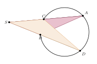
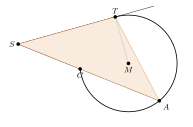

Aufgabe 7.10
Ergänzen Sie die Beweise zum Sekantensatz und Sekanten-Tangentensatz.
- Identifizieren Sie ähnliche Dreiecke
- Nutzen Sie gleiche Umfangswinkel über derselben Sehne
- Beim Tangentensatz: Nutzen Sie den Sehnen-Tangenten-Winkelsatz
- Stellen Sie Verhältnisgleichungen auf
Der Sekantensatz

Zu zeigen, wie im Satz des Kapitels: $\overline{AS}\cdot\overline{SC} = \overline{BS}\cdot\overline{SD}$. $A$ und $C$ liegen auf der einen Sekante, $B$ und $D$ auf der anderen; $C$ und $B$ sind die näheren Schnittpunkte.
Die Dreiecke $SAB$ und $SDC$ haben den Winkel bei $S$ gemeinsam. Die Winkel $CAB$ und $CDB$ sind Umfangswinkel über derselben Sehne $CB$, also gleich gross. Nach dem Ähnlichkeitssatz WW sind die Dreiecke ähnlich, mit $S \leftrightarrow S$, $A \leftrightarrow D$, $B \leftrightarrow C$: \[\frac{\overline{SA}}{\overline{SD}} = \frac{\overline{SB}}{\overline{SC}} \quad\Longrightarrow\quad \overline{AS}\cdot\overline{SC} = \overline{BS}\cdot\overline{SD}.\]
Der Sekanten-Tangenten-Satz

Zu zeigen: $\overline{AS}\cdot\overline{SC} = \overline{ST}^{\,2}$, wobei $T$ der Berührpunkt ist und $C$ der nähere, $A$ der fernere Schnittpunkt der Sekante.
Die Dreiecke $STC$ und $SAT$ haben den Winkel bei $S$ gemeinsam. Der Winkel $STC$ zwischen Tangente und Sehne $TC$ ist so gross wie der Umfangswinkel $TAC$ über derselben Sehne (Sehnen-Tangenten-Winkel). Nach WW sind die Dreiecke ähnlich, mit $S \leftrightarrow S$, $T \leftrightarrow A$, $C \leftrightarrow T$: \[\frac{\overline{ST}}{\overline{SA}} = \frac{\overline{SC}}{\overline{ST}} \quad\Longrightarrow\quad \overline{ST}^{\,2} = \overline{AS}\cdot\overline{SC}.\]
Im Video: Bonus · Streckenverhältnisse bei 4:48